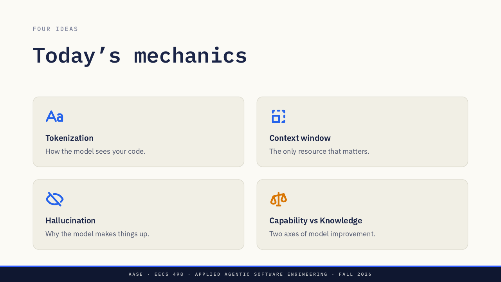
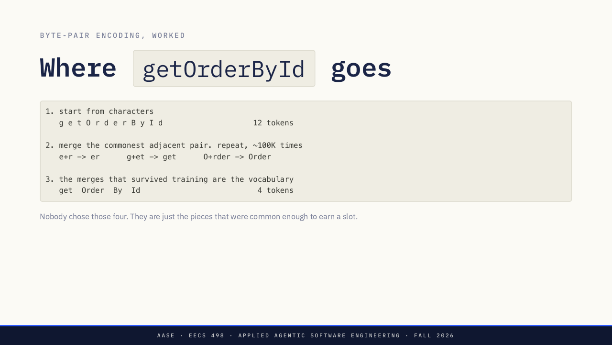
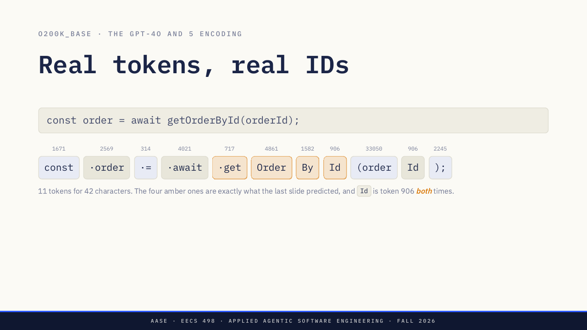
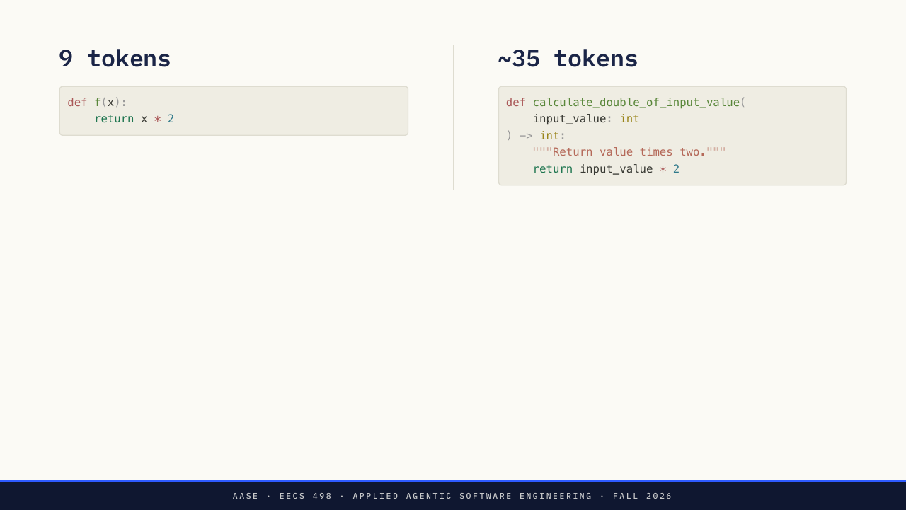
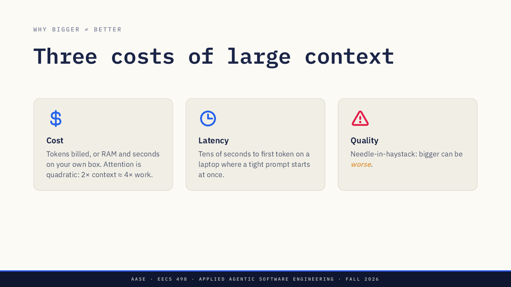
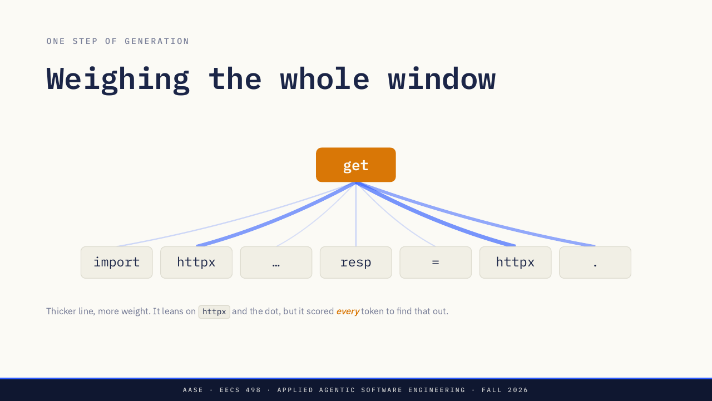
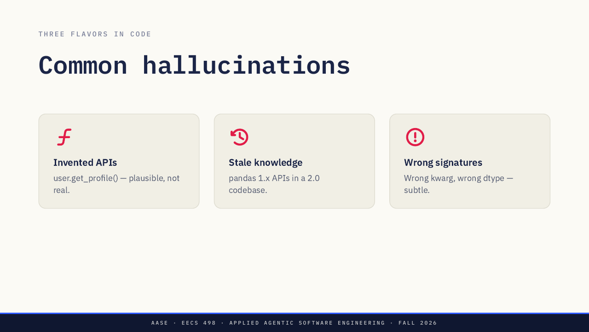
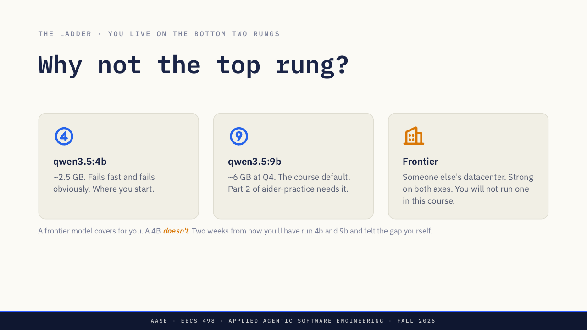

EECS 498-016 AASE · L02 · 2026-09-03 · 讲者 Marcus Darden（密歇根大学）
第 2 讲：模型写代码时的四个机制
这是 2026 年 9 月 3 日的 Lecture 02，一节纯理论课，没有现场编码。讲者备注说，本讲的回报在下一讲（L03）兑现，那时 Big Three 框架登场。
补充（据课程 syllabus）：这是第 1 周周四的课。L01 讲开发者要当 Curator，评估输出、改方向；要说清输出为什么错，需要本讲的机制。这条衔接是学习搭子的归纳。
材料：官方仓库 slides.md（含讲者备注）和同页 PDF；8 张原图是 slides.pdf 的同页渲染。
四个机制，解释这学期遇到的每次失败
开场一页只有一句：内化了这些机制的开发者，有巨大优势。讲者备注解释为什么要讲理论：事情不顺时，心智模型会赢。
- Token 化：模型怎样看你的代码。
- 上下文窗口：唯一要紧的资源。
- 幻觉：模型为什么会编造。
- 能力 vs 知识：模型进步的两个轴。

课件页： 出处：How LLMs Code (Under the Hood) 出处：Lecture 02 · Sep 3, 2026 出处：Today's mechanics
模型看到的是 token，不是字符，也不是单词
token 是模型在训练中见过的文本片段。模型看不到一个个字符，也看不到一个个单词，只看到 token。
字节对编码（BPE）的直觉：把最常见的相邻对合并起来，重复下去，直到词表约 100K 个。课件用 getOrderById 走了一遍：
- 第 1 步，从字符开始：g e t O r d e r B y I d，共 12 个 token。
- 第 2 步，合并最常见的相邻对，重复约 100K 次，例如 e+r 变 er、g+et 变 get、O+rder 变 Order。
- 第 3 步，训练后留下来的合并就是词表：get、Order、By、Id，共 4 个 token。

课件页： 出处：Tokenization 出处：What the model sees 出处：Tokens, not words 出处：Where getOrderById goes
42 个字符切成 11 个 token
课件用 GPT-4o 和 5 用的 o200k_base 编码，切这一行代码：const order = await getOrderById(orderId);
| token（· 表示前导空格） | 编号 |
|---|---|
| const | 1671 |
| ·order | 2569 |
| ·= | 314 |
| ·await | 4021 |
| ·get | 717 |
| Order | 4861 |
| By | 1582 |
| Id | 906 |
| (order | 33050 |
| Id | 906 |
| ); | 2245 |
课件：42 个字符切成 11 个 token。琥珀色的四块（·get、Order、By、Id）正是上一页预测的切法，而且 Id 两次都是 906 号。

- 讲者备注：块中间的点是前导空格，它属于 token，所以「 order」和「order」是不同的 token。
- 讲者备注：「(order」是一个 token，切分器把括号和单词吞在一起，所以 token 数很难猜。
- 讲者备注（被问到时说）：这些编号属于 o200k_base；课程用的 qwen3.5 词表不同，编号也不同，但道理一样。
token 既是花费的单位，也是注意力的单位
- 花费单位：啰嗦的代码更贵。用厂商 API 花美元，在自己机器上花内存和秒数。
- 注意力单位：每个 token 都在争注意力。你的标识符被切成常见碎片，所以不会因为是你起的名字而得到特别的重视。
同一个函数，短写法课件标为 9 tokens：
def f(x):
return x * 2长写法课件标为 ~35 tokens（slides.md 第 187–191 行，第 9 页右栏）。下面逐行看多出来的 token 花在哪：
def calculate_double_of_input_value(
input_value: int
) -> int:
"""Return value times two."""
return input_value * 2函数签名：长名字、参数名、类型标注
calculate_double_of_input_value 会被切成很多常见碎片，每块都是一个 token；input_value 和两处 int 标注再各加 token。短写法里只有 f 和 x。
docstring
一整句说明，内容和函数名重复。
做的事完全一样
返回值仍是输入乘 2，行为没有任何变化。

补充：上面按行拆 token 的说法是推断，课件只给了两个总数（9 和约 35），没有给逐行数字。
课件页： 出处：What tokenization costs you 出处：9 tokens 出处：~35 tokens
窗口外的东西，模型一律看不到
补充：上下文窗口指模型一次能看到的全部 token。
- 窗口里：文件、对话历史、repo map、系统提示词。
- 窗口外：什么都没有。没有数据库，不会去网上取，也不做检索。
课件：这是工程师需要知道的、关于 LLM 最重要的一个事实。
课件页： 出处：Context Window 出处：The only resource that matters 出处：What the model sees
大上下文有三种代价：花费、延迟、质量
- 花费：按 token 计费，或花你自己机器的内存和秒数。注意力是平方级的：上下文 2×，工作量约 4×。
- 延迟：在笔记本上，要等几十秒才出第一个 token；而一个紧凑的提示词马上就开始。
- 质量：大海捞针，更大可能更差。

上下文翻倍，工作量翻四倍
生成下一个 token 时，模型给窗口里每个已有 token 都打分，不只看附近的。课件的图里，模型要决定 httpx. 后面写什么：它最倚重 httpx 和点号，但为了知道这一点，它给每个 token 都打了分。线越粗，权重越大。

| Tokens in the window | Pairs scored | Relative work |
|---|---|---|
| 1K | 1,000,000 | 1× |
| 2K | 4,000,000 | 4× |
| 8K | 64,000,000 | 64× |
| 32K | 1,024,000,000 | 1024× |
Pairs scored 是被打分的 token 对数；Relative work 以 1K 为 1×。
读法：窗口从 1K 到 2K、8K、32K，打分的对数分别是 1,000,000、4,000,000、64,000,000 和 1,024,000,000，相对工作量是 1×、4×、64×、1024×。
课件：上下文翻倍，工作量翻四倍；窗口是预算，不是容器。讲者备注要讲透的数字：文本多 32 倍，花费不是 32 倍，而是约 1000 倍。这就是在笔记本上「把整个仓库贴进去」行不通的原因。
课件页： 出处：Weighing the whole window 出处：Every token attends to every other
对话越积越多，窗口里大半是死重
Aider 要你手动管理窗口，课件说这种麻烦本身就是一课：
/add main.py：文件进入上下文。/drop main.py：文件离开上下文。/tokens：看清窗口里到底有什么。/clear：清空对话历史，保留文件。
课件：这不是限制，而是你本来就该有的纪律。
长会话里，历史不断累积：你发的每一轮、它回的每一轮都留着。五十条消息之后，窗口里大半是死重。模型分不清哪些现在为真、哪些只在第 3 条消息时为真。
做法：换任务就 /clear。Claude Code（L05）会替你压缩上下文，而压缩会丢信息。
课间讨论（Chat break，5 分钟）：长对话变差时，窗口里在发生什么？讲者备注写明这是固定在 0:35 的休息；请学生回想一次越聊越差的对话，自己当时是新开对话还是重新解释，再用今天的词汇说出当时实际发生了什么。不纠正用词，听两三个回答就继续。
幻觉不是故障，是没有查证步骤的补全
- 模型做的正是训练它做的事：自回归采样，从分布里挑最可能的下一个 token。
- 没有核对事实这一步，没有查数据库，也没有「等等，这个存在吗？」。
讲者备注：「幻觉」听起来像一个错误。它不是错误，是设计本身。
上下文沉默时，统计先验胜出。训练数据里 import requests 比 import httpx 多 100×；你的项目用 httpx，提示词没提，模型就写出 requests：看着合理，对你的上下文却是错的。
讲者备注：这不是「编出来」的，而是给错误的真实项目用了错误的真实库。
课件页： 出处：Hallucination 出处：The misleading word 出处：The model is doing what it was trained to do 出处：Statistical priors win when context is silent
模型需要事实时，就把事实给它看
- 编造 API：
user.get_profile()，看着合理，并不存在。 - 过时知识：在 pandas 2.0 的代码库里写 1.x 的 API。
- 签名写错：关键字参数错、dtype 错，很隐蔽。

补充（学习搭子归纳，课件未逐条给修法）：编造 API，把真实接口放进上下文；过时知识，把版本和文档放进上下文；签名写错，把签名给它看。
课件：模型需要一个事实时，就把这个事实给它看。讲者备注：管理上下文最深的理由是准确，不是花费，也不是速度。
上下文也有修不了的情况。比如问「我们内部库的最新版本是几？」：仓库里也没有答案，所以没有哪次 /add 能产出它。模型会合理地猜一个，你从输出上看不出来。
课件给的做法：把事实交给它，或者造一个去查事实的工具。课程第 5 周（week 5）会造这种工具。
能力和知识是两个轴，搞混就会选错模型
| 能力（Capability） | 知识（Knowledge） | |
|---|---|---|
| 是什么 | 推理本领：多步、跨文件、守住约束 | 模型读过什么：新近程度、冷门领域的深度 |
| 随什么增长 | 模型规模：qwen3.5:4b → 9b → 前沿模型 | 训练数据的规模和新鲜度；小而新的模型可以胜过大而旧的 |
讲者备注：两个轴搞混，就会做出糟糕的模型选择。
梯子：你只待在最下面两级。为什么不用最上面一级？
- qwen3.5:4b：约 2.5 GB。失败得快，失败得明显。你从这里开始。
- qwen3.5:9b：Q4 量化下约 6 GB。课程默认，
aider-practice的 Part 2 需要它。 - 前沿模型：在别人的数据中心，两个轴都强。这门课里你不会运行它。

讲者备注：不要直接断言，而是承诺这个实验：接下来两周每个人都在 4b、然后 9b 上跑同一个仓库，这比任何基准测试都有说服力。要讲清前沿模型是他们不在的那一级，放在这里是为了说明放弃了什么、为什么放弃，而不是让他们去用。
课件页： 出处：Capability vs Knowledge 出处：Two axes 出处：Capability 出处：Knowledge 出处：Why not the top rung?
选模型要看你在哪个房间
- 对成本敏感的批处理（重复 1000×）：用过关的最小模型。
- 重推理的单个任务：用你手上能力最强的模型。
- 冷门库或框架：能力救不了你，这是上下文问题。
- 任何你在学的东西：用会在你出错处失败的那一级。
课件：这些在生产环境通常对，在课堂上通常错。本事在于分清你在哪个房间。
按顺序问三个问题
- 第 1 问，上下文：模型有它需要的东西吗？
- 第 2 问，幻觉：它编造了 API 吗？
- 第 3 问，能力或知识：任务太难？还是太新？
token 化不在清单上。它在三者底下，几乎从来不是你能动手改的地方。
下一页一句话：工具包在模型外面，核心推理调用里没有查询。讲者备注：模型为什么不自己去查？因为核心推理不查；是工具包住了它。第 5 周你会造这些工具。
补充：工具负责查文件、查网页，把事实放进窗口；模型本身不查。
模拟器是教学示例：三个问题和顺序照课件「Three questions」；情境取自课件的 httpx 例子和「What context cannot fix」。
课件页： 出处：Diagnostic 出处：When output is wrong 出处：Three questions
每次失败都是四个机制之一换了身衣服
- token 是花费的单位，也是注意力的单位。
- 上下文窗口是唯一要紧的资源，要有意识地花。
- 幻觉是没有查询的模式补全，用上下文来修。
- 能力和知识是不同的轴：大，对上新。
课件：这学期你遇到的每个失败，都是这四个机制之一换了身衣服。
课件页： 出处：What to take away
用今天的词汇重读你自己的 Aider 记录
aider-practicePart 1：setup gate 和全部十六课在 9 月 11 日周五（Fri Sep 11）截止。- 用今天的词汇重读你自己的 Aider 聊天记录：本讲的每个机制都已经在里面了。
下一讲：L03，Big Three，周二。
延伸（可选）：两段 YouTube 视频。Token 化看 Andrej Karpathy 的 Let's build the GPT Tokenizer；注意力看 Attention in transformers, step-by-step。
课件说两段都不是必需的，都比今天讲得深一层。讲者备注：下课时让这页留在屏幕上；tokenizer 那段很长，告诉学生前 30 分钟最值得看。
用 6 个场景检查你会不会诊断
小测题目由学习搭子出，依据第 4、7、8、10、12 节（来源见各节）。